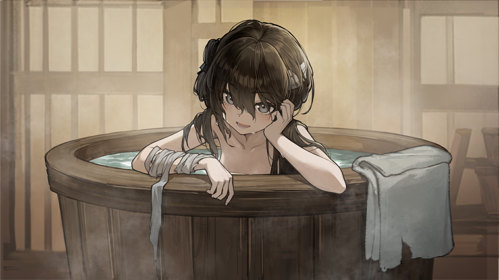

良 第七章：澡堂
返回
满穗配音
是呀不是哑巴
哑巴做事方便谁都会对哑巴戒心少一些
你们不说他们便发现不了呀应该不会说吧
没事你多吃点好长大
话说你们为啥都叫我姐姐呀为什么觉得我比你们大
我的名字是穗你们叫我穗姐姐就好
不过千万要记得不要在兴爷面前同我说话兴爷若是知道我不是哑巴会打死我的
要么这样吧琼华红儿翠儿你们先洗我和良爷之后洗
没事良爷知道我不是哑巴不用担心的
我提议你们先洗我和良爷后洗是觉得这样才合适
男女授受不亲琼儿家教严不能与良爷一起洗也不好自己洗干脆你们三个先吧
可若是这样难免良爷会有些寂寞良爷若喜欢让女童陪着洗澡我可以陪良爷洗
谢谢良爷
水池这边不烫呀我们可以去这里洗
嗯良爷说了吗
没事的我们也来这边洗吧不用管太多
四个人用木桶太挤了肯定是要用水池的等我们洗完后再帮良爷换新的水就好
我看看嗯应是这么弄呀怎么直接就放水了哦哦会了会了
我嗯家里住在洛阳
也没什么就是一座很大的城镇有很多人有吃不完的粮食琼儿是哪里人
杭州我知道那是很美的地方白娘娘和许宜在西湖相遇后来被法海镇在了雷峰塔
琼儿你见过万岁爷吗京城喔听说京城的皇宫很漂亮金黄的琉璃瓦会发光万岁爷就住在皇宫里
万岁爷是什么样的
袁伯伯
不知道，我只知道京城有方岁爷，万岁爷管着天下百姓
听说琼儿你是被兴爷他们拐来的
你没想过要跑
这是尹三和你说的
那你别信他也别怕他你爹娘一定还想找你的
良爷你不能进来
我们还没洗完洗完了还要洗衣服一炷香时间不够
哦良爷还有一件事想要问你
我们等会儿洗了衣服要怎么换衣服这里没有能换的衣服
谢谢良爷
良爷你能找到木刷吗我们想刷刷脚
走了那么多天脚脏得难受不刷之后走不动
良爷拜托去找个来吧一会儿翠儿拉在水池里你之后也不好洗
求求良爷了帮帮翠儿吧
良爷再等等
马上马上
良爷我洗过了
呜这些事都让我一个人做良爷也真要我陪你洗
好吧
哈啊哈啊良爷我好累
那良爷把我关回去吧
啊良爷真要陪着洗啊我还以为你只是为了捉弄我随便说说
啊我身上有汗臭味吗
良爷我脱完了我是跟你一起在水池里洗还是在木桶里洗
好
呼好烫好烫
良爷嗯良爷刚才没在看我呀
良爷觉得我很瘦吗
嘿嘿良爷不想我看你的身体吗
良爷都说了看过我的身体了也让我看回来吧
除了爹爹我还没看过其他男人的裸体有些好奇呢
啧明明是良爷不知耻非要让我跟你一起洗
好了好了我说错了别打我
哇良爷的身子好壮
一二三四五六七
我在数良爷身上的疤一条大的好多条小的为什么有那么多疤
良爷杀过很多人吗
大概多少个
不怕
良爷今天兴爷好像不在他去哪了
那良爷为何不去和兴爷一起
不感兴趣难道良爷喜欢男人
不想我不多嘴了掌嘴掌嘴
话说良爷现在还没娶媳妇吗
爹娘没给良爷安排吗
也是
呃良爷想要什么样的媳妇
啊好常见的想法
我不知道啊男人该怎么想我也不知道
但是我若是嫁人的话就想嫁给我爹爹那样的人勤劳本分长得好看身体也壮
嘿嘿也是
啊确实是如此
有了那我以后嫁给良爷吧
什么不要
呜被良爷嫌弃了
良爷为什么怕吕布啊
上次学影子戏的时候，吕布刚要登场，良爷就吓得不敢看了
不知道
良爷讲讲
好恐怖
不过良爷这跟影子戏有什么关系
好呀我来洗给良爷都洗干净了
我知道啊，所以能过一天是一天
那良爷我若是说不想去报仇也不去洛阳了良爷能放我走吗
这样也好那我也能安心了